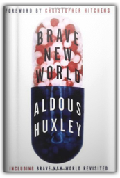
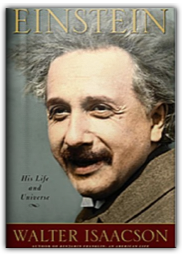
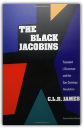
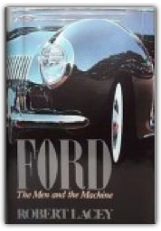

Critical introduction by Irban Habib, then all documents with extensive notes. major publication

Brave New World and Brave New World Revisited
Aldous Huxley
The astonishing novel Brave New World, originally published in 1932, presents Aldous Huxley's vision of the future — of a world utterly transformed. Through the most efficient scientific and psychological engineering, people are genetically designed to be passive and therefore consistently useful to the ruling class. This powerful work of speculative fiction sheds a blazing critical light on the present and is considered to be Aldous Huxley's most enduring masterpiece.
By the time Henry Kissinger was made secretary of state in 1973, he had become, according to the Gallup Poll, the most admired person in America and one of the most unlikely celebrities ever to capture the world's imagination. Yet Kissinger was also reviled by large segments of the American public, ranging from liberal intellectuals to conservative activists. Kissinger explores the relationship between this complex man's personality and the foreign policy he pursued. Drawing on extensive interviews with Kissinger as well as 150 other sources, including U.S. presidents and his business clients, this first full-length biography makes use of many of Kissinger's private papers and classified memos to tell his uniquely American story. The result is an intimate narrative, filled with surprising revelations, that takes this grandly colorful statesman from his childhood as a persecuted Jew in Nazi Germany, through his tortured relationship with Richard Nixon, to his later years as a globe-trotting business consultant.

Einstein: His Life and Universe
Walter Isaacson
By the author of the acclaimed bestseller Benjamin Franklin, this is the first full biography of Albert Einstein since all of his papers have become available.
At times pious, at times profane but always unashamedly honest, The Diaries of Christopher Isherwood provide an inside look at the life and times of one of the most celebrated writers of the century. Chronicling Isherwood's life from 1939, when he emigrated to the United States, until 1960, these entries cover some of the most turbulent years of his career and give readers unprecedented insight into the major turning points in his life. Here, Isherwood relates the spiritual crisis he went through as World War II began, his discipleship (along with Aldous Huxley and Gerald Heard) with the Hindu monk Swami Prabhavananda and his decision to become a pacifist. Here also are his accounts of his intense social life in Hollywood, his career as a screenwriter and his many sexual affairs. Readers will be particularly fascinated by his revealing anecdotes and gossip about the literary greats (such as W. H. Auden, Thomas Mann, E. M. Forster, and Tennessee Williams) and movie stars (such as Greta Garbo, Charlie Chaplin and Sir Laurence Olivier) of the time.
Fiction
Fiction |
Originally published in 1976, Christopher and His Kind covers the most memorable ten years in the writer's life-from 1929, when Isherwood left England to spend a week in Berlin and decided to stay there indefinitely, to 1939, when he arrived in America. His friends and colleagues during this time included W. H. Auden, Stephen Spender, and E. M. Forster, as well as colorful figures he met in Germany and later fictionalized in his two Berlin novels-who appeared again, fictionalized to an even greater degree, in I Am a Camera and Cabaret.

The Black Jacobins: Toussaint L'Ouverture and the San Domingo Revolution
C.L.R. James
A classic and impassioned account of the first revolution in the Third World.
Co-author of the groundbreaking Empire and Multitude, Michael Hardt examines the Declaration of Independence and other texts by Jefferson, arguing that his powerful concept of democracy provides a biting critique of the current American administration.
Trials of the Diaspora is a ground-breaking book that reveals the full history of anti-Semitism in England. Anthony Julius focuses on four distinct versions of English anti-Semitism. He begins with the medieval persecution of Jews, which included defamation, expropriation, and murder, and which culminated in 1290 when King Edward I expelled all the Jews from England. Turning to literary anti-Semitism, Julius shows that negative portrayals of Jews have been continuously present in English literature from the anonymous medieval ballad "Sir Hugh, or the Jew's Daughter," through Shakespeare's Merchant of Venice, to T. S. Eliot and beyond. The book then moves to a depiction of modern anti-Semitism—a pervasive but contained prejudice of insult and exclusion that was experienced by Jews during their "readmission" to England in the mid-17th century through the late 20th century. The final chapters detail the contemporary anti-Semitism that emerged in the late 1960s and the 1970s and continues to be present today. It treats Zionism and the State of Israel as illegitimate Jewish enterprises, and, in Julius's opinion, now constitutes the greatest threat to Anglo-Jewish security and morale. A penetrating and original work, Trials of the Diaspora is sure to provoke much comment and debate. 
The untold life story of a novelist whose greatest fictional creation was his own identity.

FORD The Men and the Machine
Robert Lacey
Master biographer Robert Lacey tells the fascinating, authoritative account of the ambitious men and glamorous women behind the world's largest family-controlled business empire. From Henry Ford — the original in every sense of the word — whose revolutionary standards created a new way of life for America and the world, to Henry Ford II, old Henry's grandson, who rose from a frivolous playboy to become an industrial giant in his own right, to the tragic figure of Edsel Ford, old Henry's son and young Henry's father, smothered by the one and overshadowed by the other, to brash Lee Iacocca, whose visionary plans for the company would put him in conflict with Henry Ford II. |

Fogus
Collection Total:
193 Items
193 Items
Last Updated:
Dec 16, 2011
Dec 16, 2011
 Made with Delicious Library
Made with Delicious Library